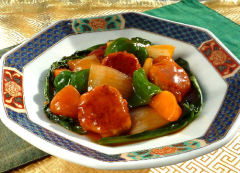

鶏だんごの中華風甘酢あんかけ

材料（4人分）
- なんこつ入り鶏生だんご ... 1パック
- 玉ねぎ(乱切り) ... 1/2個
- 人参(乱切り) ... 1/2本
- ピーマン(乱切り)... 1個
- にんにく(みじん切り)... 1かけ
- しょうが（みじん切り） ... 1かけ
- サラダ油 ... 大さじ1
- ごま油 ... 大さじ1
- 鶏ガラスープの素(A) ... 1g
- 砂糖(A) ... 大さじ2
- 醤油(A) ... 小さじ1
- ケチャップ(A) ... 50g
- 水(A) ... 50ml
- 片栗粉(A) ... 小さじ1
- 酢(A) ... 大さじ1
作り方（調理時間:15分/目安）
- フライパンにサラダ油を引き、鶏だんごを軽くつぶし中心部までよく焼いて取り出しておく。
- 同じフライパンに、にんにく、しょうがを炒め、香りがでたら玉ねぎ、人参、ピーマンの順で加える。
- 野菜に火が通ったら、(1)の鶏だんご、Ａの合せた調味料を加える。よく絡めて、とろみがでたらごま油で香りづけして出来上がり！
提供
伊藤ハム米久ホールディングス（株）